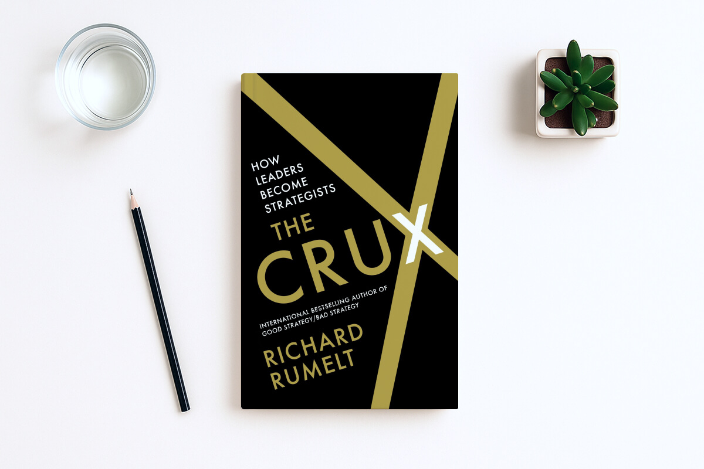

<div class="home">
    <div class="profile spacer reveal">
        <h1>Hello there. I'm Carlos, a product designer with over 15 years of experience based in sunny Portugal.</h1>
        <p class="intro">I work remotely as a product designer at <a href="https://www.nagarro.com/dv" target="_blank">Nagarro</a>, turning clients' needs into validated working products and services through a human-centred design approach.</p>
        <p><a class=" " href="/about">More about me</a></p>
        <ul class="gallery">
          <li>
            <picture>
              <source media="(min-width: 600px)" srcset="assets/images/profile/profile_1.webp" type="image/webp">
              <source media="(min-width: 600px)" srcset="assets/images/profile/profile_1.jpg" type="image/jpeg">
              <source srcset="assets/images/profile/profile_1_small.webp" type="image/webp">
              <source srcset="assets/images/profile/profile_1_small.jpg" type="image/jpeg">
              
            </picture>
          </li>
          <li>
            <picture>
              <source media="(min-width: 600px)" srcset="assets/images/profile/profile_2.webp" type="image/webp">
              <source media="(min-width: 600px)" srcset="assets/images/profile/profile_2.jpg" type="image/jpeg">
              <source srcset="assets/images//profile/profile_2_small.webp" type="image/webp">
              <source srcset="assets/images//profile/profile_2_small.jpg" type="image/jpeg">
              
            </picture>
          </li>
        </ul>
    </div>
    <div class="selected-work spacer reveal">
    <h2 class="title-tag reveal">Selected Work</h2>
    <p>Following a design thinking approach, I  create a bridge between what users need, the business ways of working and thinking, driving results to success. In case you want to check my case studies portfolio <a href="#contact">request it</a> and I will send it to you.</p>
    <ul class="post-list">
      <li class="reveal no-link">
        <picture class="no-link">
          <source media="(min-width: 600px)" srcset="assets/images/work/rms@2x.webp" type="image/webp">
          <source media="(min-width: 600px)" srcset="assets/images//workrms@2x.jpg" type="image/jpeg">
          <source srcset="assets/images/work/rms_small@2x.webp" type="image/webp">
          <source srcset="assets/images/work/rms_small@2x.jpg" type="image/jpeg">
          
        </picture>
        <section class="work-title">
            <h3>RMS Information Central</h3>
            <p>Led and designed a support platform for customers to self-serve, consume information and get help on Risk Managment Solutions.</p>
        </section>
      </li>
      <li class="reveal no-link">
        <picture class="no-link">
          <source media="(min-width: 600px)" srcset="assets/images/work/poc@2x.webp" type="image/webp">
          <source media="(min-width: 600px)" srcset="assets/images/work/poc@2x.jpg" type="image/jpeg">
          <source srcset="assets/images/work/poc_small@2x.webp" type="image/webp">
          <source srcset="assets/images/work/poc_small@2x.jpg" type="image/jpeg">
          
        </picture>
        <section class="work-title">
            <h3>Bike Sharing POC</h3>
            <p>Designed a proof of concept for a city bicycle sharing app, giving its users the ability to search, rent and enjoy their ride.</p>
        </section>
      </li>
        <li class="reveal no-link">
          <picture class="no-link">
            <source media="(min-width: 600px)" srcset="assets/images/work/vodafone@2x.webp" type="image/webp">
            <source media="(min-width: 600px)" srcset="assets/images/work/vodafone@2x.jpg" type="image/jpeg">
            <source srcset="assets/images/work/vodafone_small@2x.webp" type="image/webp">
            <source srcset="assets/images/work/vodafone_small@2x.jpg" type="image/jpeg">
            
          </picture>
          
          <section class="work-title">
              <h3>Vodafone Ireland</h3>
              <p>Shapped B2C and B2B solutions in the ecommerce and self-serve space while managing a team of designers.</p>
          </section>
        </li>
        <li class="reveal no-link">
          <picture class="no-link">
            <source media="(min-width: 600px)" srcset="assets/images/work/eir@2x.webp" type="image/webp">
            <source media="(min-width: 600px)" srcset="assets/images/work/eir@2x.jpg" type="image/jpeg">
            <source srcset="assets/images/work/eir_small@2x.webp" type="image/webp">
            <source srcset="assets/images/work/eir_small@2x.jpg" type="image/jpeg">
            
          </picture>
            <section class="work-title">
              <h3>Eir</h3>
              <p>Redefined eir's users flows through quantitative and qualitative insights driving improvements on sales and self-serve performance.</p>
            </section>
        </li>
        <li class="reveal no-link">
          <picture class="no-link">
            <source media="(min-width: 600px)" srcset="assets/images/work/tourism_ireland@2x.webp" type="image/webp">
            <source media="(min-width: 600px)" srcset="assets/images/work/tourism_ireland@2x.jpg" type="image/jpeg">
            <source srcset="assets/images/work/tourism_ireland_small@2x.webp" type="image/webp">
            <source srcset="assets/images/work/tourism_ireland_small@2x.jpg" type="image/jpeg">
            
          </picture>
          <section class="work-title">
              <h3>Tourism Ireland</h3>
              <p>Led the entire redesign process of how Tourism Ireland communicates to their audience where investments are being made to promote the island of Ireland.</p>
          </section>
        </li>
        <li class="reveal no-link">
          <picture class="no-link">
            <source media="(min-width: 600px)" srcset="assets/images/work/irish_rail@2x.webp" type="image/webp">
            <source media="(min-width: 600px)" srcset="assets/images/work/irish_rail@2x.jpg" type="image/jpeg">
            <source srcset="assets/images/work/irish_rail_small@2x.webp" type="image/webp">
            <source srcset="assets/images/work/irish_rail_small@2x.jpg" type="image/jpeg">
            
          </picture>
          <section class="work-title">
            <h3>Irish Rail</h3>
            <p>Collaborated in the process of enhancing the digital experience and to meet and exceed their customer's expectations.</p>
          </section>
        </li>
        <li class="reveal no-link">
          <picture class="no-link">
            <source media="(min-width: 600px)" srcset="assets/images/work/rds@2x.webp" type="image/webp">
            <source media="(min-width: 600px)" srcset="assets/images/work/rds@2x.jpg" type="image/jpeg">
            <source srcset="assets/images/work/rds_small@2x.webp" type="image/webp">
            <source srcset="assets/images/work/rds_small@2x.jpg" type="image/jpeg">
            
          </picture>
          <section class="work-title">
              <h3>
                RDS
              </h3>
              <p>Lead the redesign of the RDS online presence, not only to modernise it but also to promote more efficiently the space for event booking.</p>
          </section>
        </li>
        <li class="reveal no-link">
          <picture class="no-link">
            <source media="(min-width: 600px)" srcset="assets/images/work/energia@2x.webp" type="image/webp">
            <source media="(min-width: 600px)" srcset="assets/images/work/energia@2x.jpg" type="image/jpeg">
            <source srcset="assets/images/work/energia_small@2x.webp" type="image/webp">
            <source srcset="assets/images/work/energia_small@2x.jpg" type="image/jpeg">
            
          </picture>
          <section class="work-title">
              <h3>
                Energia Registrations
              </h3>
              <p>Through research I was able to identify key optimisations to the registration process which led to an increase in the conversion rate.</p>
          </section>
        </li>
      </ul>
    </div>
    <div class="selected-article spacer reveal">
      <h2 class="title-tag">Writtings</h2>
      {% for post in site.categories.articles limit:3 %}
              <article class="selected-article--card">
                <div class="selected-article--content">
                  <h3><a class=" " href="{{ post.url }}">{{ post.title }}</a></h3>
                  <p>{{ post.excerpt }}</p>
                </div>
            </article>
      {% endfor %}
      <p><a class=" " href="/articles">More articles</a></p>
    </div>
    <div class="spacer reveal reading">
      <picture>
        <source media="(min-width: 600px)" srcset="assets/images/book.webp" type="image/webp">
        <source media="(min-width: 600px)" srcset="assets/images/book.jpg" type="image/jpeg">
        <source srcset="assets/images/book_small.webp" type="image/webp">
        <source srcset="assets/images/book_small.jpg" type="image/jpeg">
        
      </picture>
      
      <h2 class="title-tag">Currently Reading</h2>
      <h3><a class=" " href="https://www.amazon.com/100M-Offers-People-Stupid-Saying-ebook/dp/B099QVG1H8/">$100M Offers: How To Make Offers So Good People Feel Stupid Saying No</a></h3>
      <p>by Alex Hormozi</p>
    </div>
</div>
{% include contact.html %}
